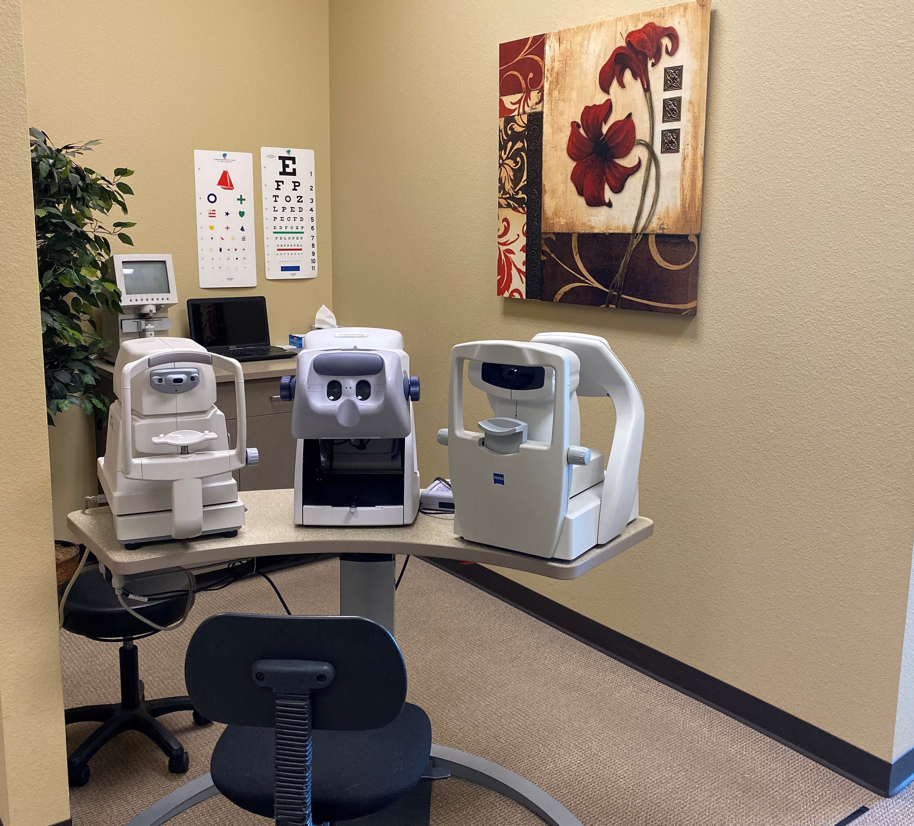
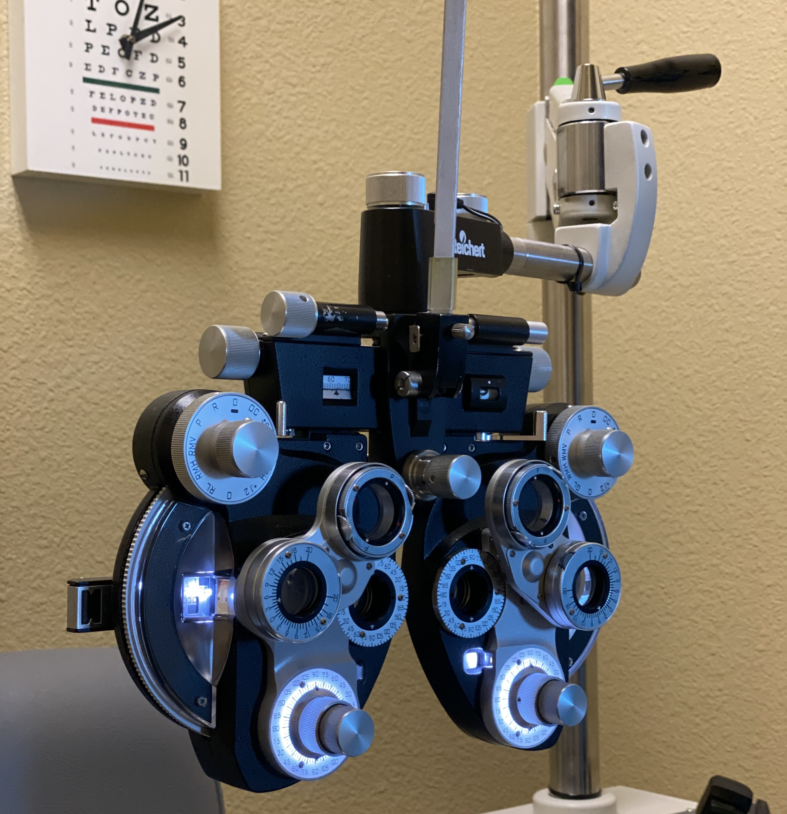

The unique exam experience at Eddington Eyecare
An eye exam at Eddington Eyecare will leave a lasting impression. Preliminary testing performed by our skilled optometry technician includes visual acuity, depth perception, ocular motility, peripheral vision, color vision, autorefraction (estimates your spectacle prescription based solely on your eye shape) and pre-glaucoma testing (yes, the air puff!).
Once in the exam room, you should first take notice of the 20 foot eyelane, at the end of which is the latest in flat-screen letter display technology. What's the significance of a 20 foot lane? For a prescription to be the most accurate, it is important for your eyes to be as relaxed as possible, and this is best accomplished when they are looking at a screen at least 20 feet away, a distance known as optical infinity, and hence the first "20" in the 20/20 notation. Most optometry practices have decided to cut corners here and use 10 foot eyelanes with mirrors. They will argue that using a mirror to obtain 20 feet is physically the same. Unfortunately the eyes will fight to focus on the wall at 10 feet and the image in the mirror at "20" feet, making it more difficult to get an accurate prescription.
One of the most dreaded questions during an exam, "Which is better, one or two?" will no longer leave you feeling as though you've "failed" the test! After almost 30 years (yikes) of experience and tens of thousands of responses from patients, Dr Eddington has developed such an easygoing refraction technique that many note it as the most thorough yet easy eye exam they have ever had. Included in the comprehensive exam is also a low contrast/night vision test, which can aid in the early detection of diseases such as macular degeneration, glaucoma and cataracts.
Should it be necessary, Eddington Eyecare also has an auxiliary testing room where we can obtain complete peripheral vision testing, take retinal pictures to document internal pathology, and also obtain corneal topopraphy images to aid in the early detection of serious corneal disorders, to include contact lens overwear syndrome.

